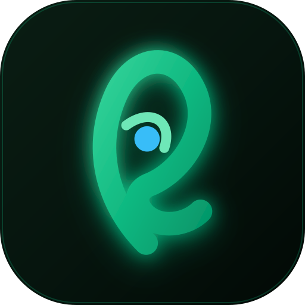

O ponto azul foi reajustado para a posição ideal (cx: 171), retornando exatamente o necessário para manter respiro limpo e harmonia equidistante entre ambas as bordas.
Esta imagem foi renderizada em alta definição (1024×1024) com margem respirável de segurança de 220px em todas as direções. Ao ser recortada pelo círculo do WhatsApp, o símbolo se mantém perfeitamente centralizado e sem encostar nas bordas.
